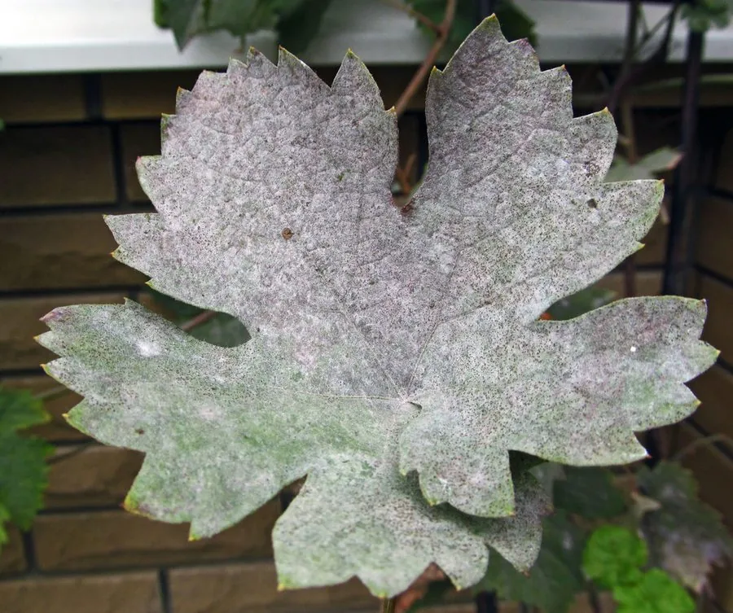

真菌 · 真菌界
葡萄白粉菌 Erysiphe necator

葡萄园里常见的病原真菌，菌丝在叶片和果面上形成白色粉状霉层，是葡萄酒产区重点防治的病害之一。
- 分类
- 门子囊菌门纲锤舌菌纲目白粉菌目科白粉菌科属白粉菌属
- 栖息环境
- 葡萄的叶片、嫩梢和果实表面，温暖干燥、通风不良时易发病
- 地理分布
- 全球葡萄产区广泛分布，中国各葡萄产区均有发生
- 保护级别
- 暂无评估（植物病原菌，非保护对象）
物种志
葡萄白粉菌是子囊菌门白粉菌目的专性寄生真菌，菌丝体表生，在寄主表面形成白色粉状的霉层。它的分生孢子呈串珠状着生在分生孢子梗上，无色、单胞、椭圆形；有性世代产生闭囊壳，闭囊壳球形，成熟时呈黑色并带有附属丝。它只寄生在葡萄等少数植物上。
葡萄白粉菌是葡萄的重要病害，菌丝从寄主表皮细胞吸取营养，导致叶片卷曲、果面出现白粉斑，果实生长受阻甚至开裂，严重影响葡萄的产量和品质。它喜欢温暖干燥、通风不良的环境，与需要高湿的白粉病不同，葡萄白粉病在干燥的白天也能传播。防治上以改善通风透光、清除病叶和适时使用硫制剂等为主，是葡萄酒产区重点防治的病害之一。
形态与习性
- 分类子囊菌门白粉菌目白粉菌属
- 菌丝表生，在寄主表面形成白色粉状霉层
- 分生孢子串珠状着生，无色、单胞、椭圆形
- 闭囊壳球形，成熟时黑色并带附属丝
- 寄主葡萄等少数植物，为专性寄生
- 发病条件温暖干燥、通风不良的环境
- 防治改善通风透光、清除病叶、适时使用硫制剂
趣味知识
- 葡萄白粉菌的菌丝在叶片和果面形成白色粉状霉层。
- 它只寄生葡萄等少数植物，是专性寄生真菌。
- 葡萄白粉病在温暖干燥的环境中也能传播。
- 改善通风透光、清除病叶是防治白粉病的重要措施。